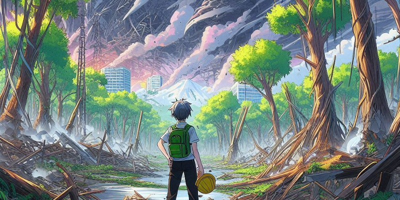
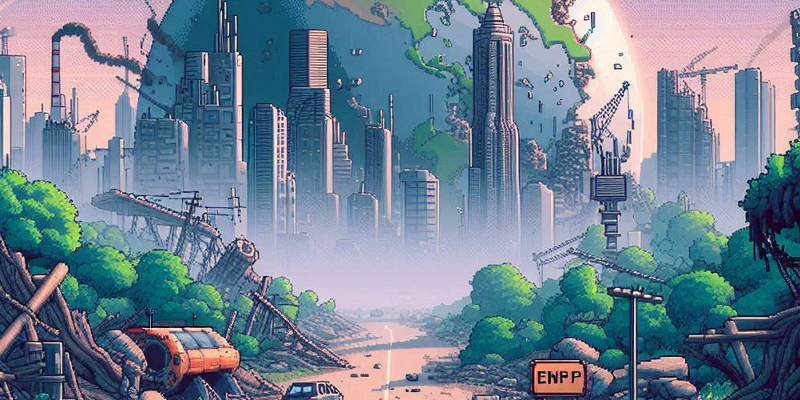
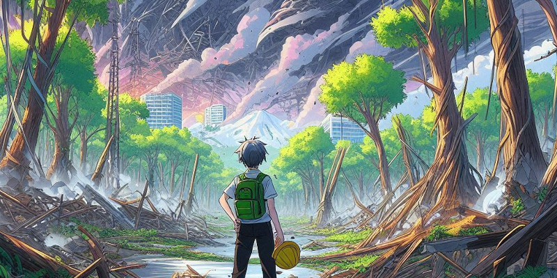
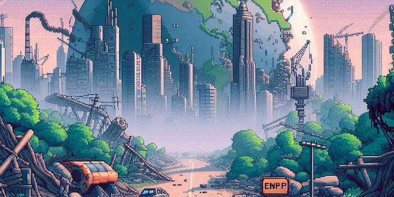

The GLOBE Protocols are essential because they empower individuals—students, educators, and citizen scientists alike—to contribute meaningfully to scientific research while learning about the environment. By following standardized methods for collecting data on topics such as climate, water quality, soil health, and biodiversity, participants can ensure their findings are accurate, reliable, and comparable across different regions and time periods. This data contributes to a global database that scientists use to track environmental changes, analyze trends, and make informed decisions about pressing issues like climate change and natural resource management. The GLOBE Protocols not only promote hands-on learning but also inspire a sense of responsibility, encouraging individuals to take part in understanding and protecting our planet.
Are You Ready to Start Your Quest?
Sign up today and make a difference!